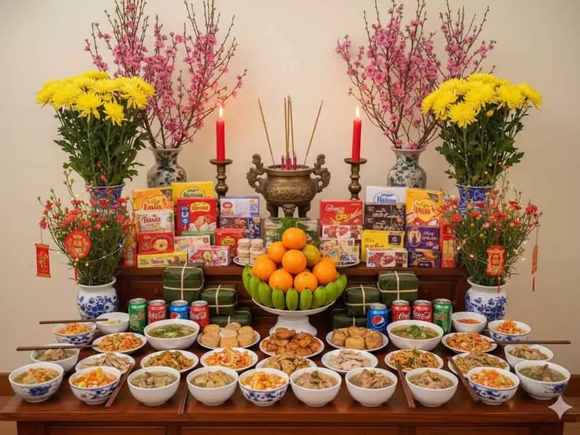
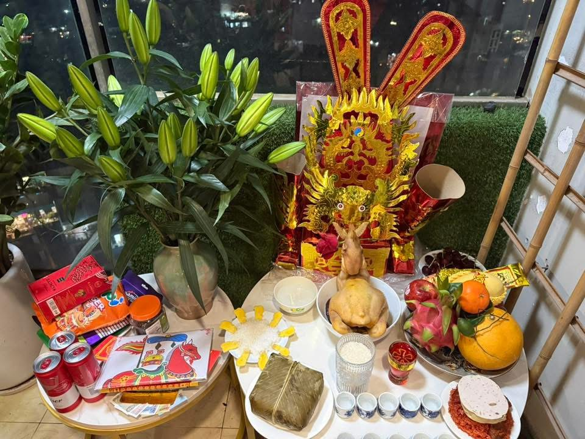
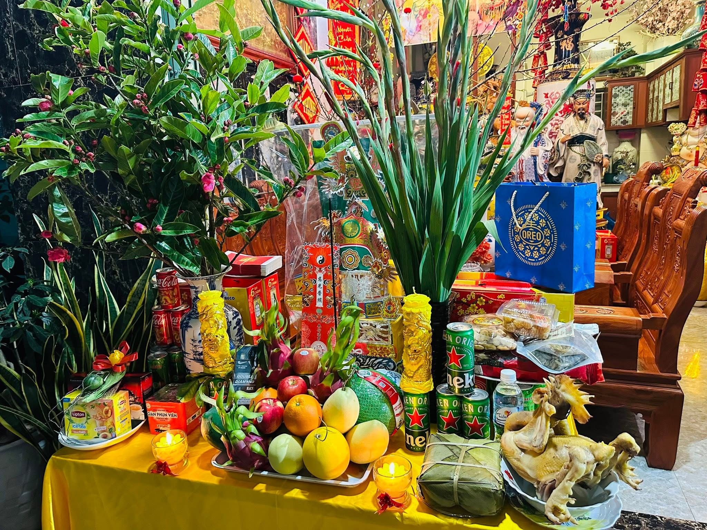

Trong đời sống văn hóa của người Việt, xông đất (hay còn gọi là xông nhà) là một trong những phong tục mở đầu năm mới quan trọng nhất. Ngay sau thời khắc giao thừa của Tết Nguyên Đán, người đầu tiên bước vào nhà được tin rằng sẽ mang theo vận khí cho gia chủ suốt cả năm.
Phong tục này bắt nguồn từ quan niệm dân gian phương Đông về sự khởi đầu. Người xưa tin rằng mỗi con người đều có “vía” riêng; nếu người có vía tốt, hợp tuổi, hợp mệnh với gia chủ đến chúc Tết đầu tiên, gia đình sẽ gặp nhiều may mắn, thuận lợi trong làm ăn và cuộc sống. Chính vì vậy, việc lựa chọn người xông đất thường được cân nhắc kỹ lưỡng trước Tết.
Về cách thực hiện, gia chủ thường mời trước một người quen biết, tính tình vui vẻ, công việc ổn định, gia đạo êm ấm đến chúc Tết ngay sau giao thừa. Người này bước vào nhà với lời chúc tốt đẹp, có thể mang theo lì xì tượng trưng cho trẻ nhỏ. Ở một số nơi, nếu không tiện mời ai, gia chủ có thể tự ra khỏi nhà trước thời khắc chuyển giao rồi bước vào lại để “tự xông đất”.
Điểm giống nhau giữa các miền là đều coi trọng yếu tố may mắn đầu năm và sự hiện diện của người mang năng lượng tích cực. Tuy nhiên, sự khác biệt thể hiện rõ trong quan niệm lựa chọn. Miền Bắc thường chú trọng yếu tố hợp tuổi, ngũ hành; miền Trung quan tâm nhiều đến đạo đức và nhân cách; còn miền Nam có phần linh hoạt hơn, miễn là người đến chúc Tết mang theo sự vui vẻ và lời chúc chân thành. Dù khác nhau trong chi tiết, tục xông đất vẫn phản ánh niềm tin giản dị của con người về một sự khởi đầu hanh thông.


Nguồn ảnh: Pinterest
Nguồn video: VNAMEDIA
Giữa sắc xuân rộn ràng, hình ảnh những phong bao đỏ được trao tay đã trở thành biểu tượng đặc trưng của ngày Tết. Tục lì xì, hay còn gọi là mừng tuổi, có nguồn gốc từ văn hóa Á Đông và được người Việt tiếp nhận, gìn giữ qua nhiều thế hệ.
Theo truyền thống, màu đỏ tượng trưng cho may mắn và xua đuổi điều xấu. Tiền đặt trong bao lì xì không mang ý nghĩa vật chất đơn thuần mà là biểu trưng cho lời chúc tốt đẹp. Trẻ em nhận lì xì để mong học giỏi, khỏe mạnh; người cao tuổi được mừng tuổi với ước nguyện trường thọ, an vui. Như vậy, lì xì không chỉ là trao tặng tiền mà còn là trao gửi niềm tin và hy vọng.
Phong tục này thường được thực hiện vào sáng mùng Một hoặc trong những ngày đầu năm. Con cháu chúc Tết ông bà, cha mẹ bằng những lời kính trọng; sau đó nhận bao lì xì như một sự ghi nhận và động viên. Ở nhiều gia đình, con cháu cũng mừng tuổi ngược lại cho ông bà để thể hiện lòng hiếu thảo.
Điểm chung giữa các vùng miền là đều sử dụng bao đỏ và gắn việc lì xì với lời chúc đầu năm. Tuy nhiên, miền Bắc thường đề cao nghi thức, trẻ nhỏ khoanh tay lễ phép trước khi nhận. Miền Trung coi trọng sự trang trọng, lời chúc phải thành tâm. Trong khi đó, miền Nam mang không khí cởi mở hơn, phong bao lì xì có thể được trao giữa bạn bè, đồng nghiệp như lời chúc may mắn đầu xuân. Sự khác biệt ấy phản ánh tính cách văn hóa vùng miền nhưng vẫn giữ nguyên giá trị cốt lõi: gắn kết tình thân.


Nguồn ảnh: Pinterest
Nguồn video: Chất Việt & Nhật Bản
Trong chuỗi phong tục ngày Tết, cúng giao thừa giữ vị trí đặc biệt bởi đây là nghi lễ diễn ra đúng thời khắc chuyển giao giữa năm cũ và năm mới. Theo tín ngưỡng dân gian, mỗi năm có một vị thần cai quản hạ giới; khi năm hết, thần cũ bàn giao cho thần mới. Lễ cúng vì thế mang ý nghĩa tiễn đưa và nghênh đón.
Thông thường, các gia đình chuẩn bị hai mâm lễ: một mâm cúng ngoài trời để kính trời đất, thần linh; một mâm trong nhà để tưởng nhớ tổ tiên. Lễ vật gồm hương, hoa, đèn nến, bánh chưng hoặc bánh tét, trái cây và các món ăn truyền thống. Khi kim đồng hồ điểm 0 giờ, gia đình thắp hương, khấn nguyện, gửi gắm ước mong bình an.
Điểm giống nhau giữa các miền là đều coi giao thừa là thời khắc thiêng liêng và thực hiện nghi lễ với lòng thành kính. Tuy nhiên, món lễ có sự khác biệt: miền Bắc phổ biến bánh chưng, gà luộc; miền Trung mang đậm nét ẩm thực địa phương; miền Nam thường có bánh tét, thịt kho tàu, canh khổ qua với mong ước những khó khăn sẽ qua đi.
Dù cách chuẩn bị có khác nhau, cúng giao thừa vẫn là biểu tượng của sự đoàn tụ gia đình và niềm tin vào tương lai tươi sáng.
Trên bàn thờ gia tiên mỗi dịp Tết, mâm ngũ quả luôn chiếm vị trí trang trọng. Phong tục này bắt nguồn từ quan niệm về ngũ hành và mong ước “phúc – lộc – thọ – khang – ninh” trong năm mới.
Năm loại quả tượng trưng cho sự hài hòa của đất trời và thành quả lao động sau một năm vất vả. Việc bày mâm ngũ quả thể hiện lòng biết ơn tổ tiên, đồng thời gửi gắm ước mong về cuộc sống đủ đầy, thịnh vượng. Trái cây được lựa chọn phải tươi, đẹp, không hư hỏng và được sắp xếp hài hòa, cân đối.
Các miền có cách chọn quả khác nhau. Miền Bắc thường bày chuối xanh làm nền đỡ, ở giữa là bưởi hoặc phật thủ, xung quanh là cam, quýt, hồng. Miền Trung không quá cầu kỳ, tùy điều kiện từng gia đình mà sắp đặt. Miền Nam lại ưa chuộng các loại quả đọc lái thành câu chúc như “cầu – dừa – đủ – xài – sung”, đồng thời tránh một số loại quả có âm đọc không may. Tuy khác biệt về hình thức, tất cả đều chung một điểm: hướng đến ước nguyện ấm no, hạnh phúc.
  Nguồn ảnh: Pinterest
Nguồn video: HTV
Nguồn video: VNAMEDIA